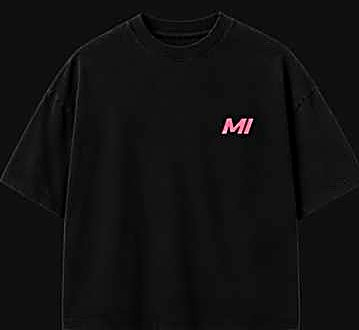
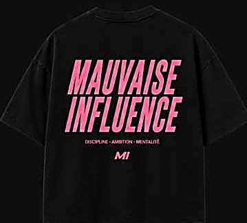
Mauvaise Influence — Noir / Rose
100% coton · 240g · Survolez pour voir le dos


100% coton · 240g · Survolez pour voir le dos
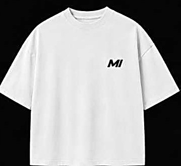
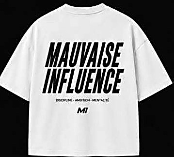
100% coton · 240g · Coupe boxy
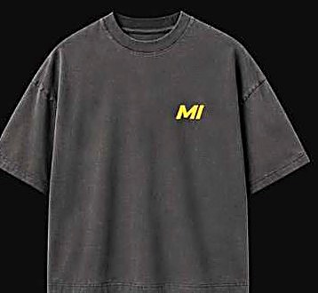
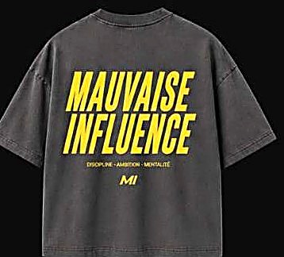
100% coton · 240g · Délavé vintage
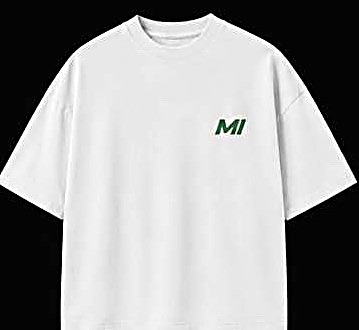
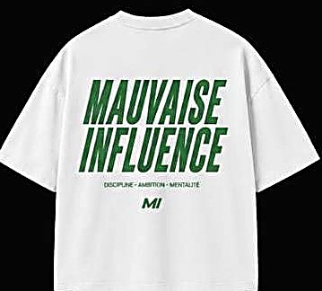
100% coton · 240g · Édition limitée
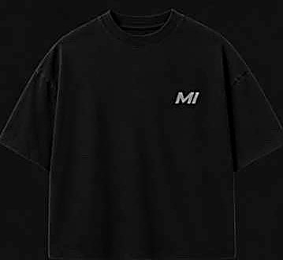
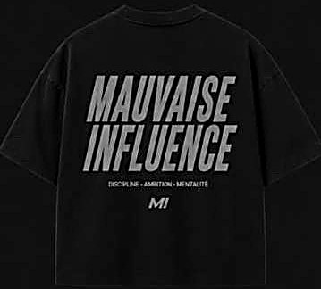
100% coton · 240g · Discipline · Ambition
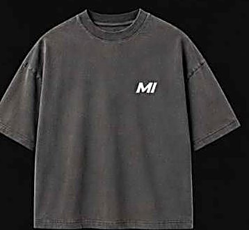
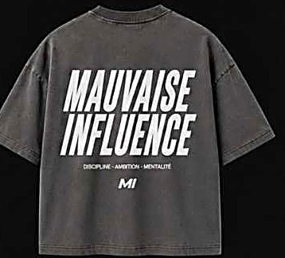
100% coton · 240g · Délavé vintage
Nouvelles pièces ajoutées à chaque drop. Suivez-nous pour ne rien manquer.
Fondée pour celles et ceux qui s'entraînent avec la même exigence qu'ils s'habillent.
MI Athletics est née d'une idée simple : le vêtement de sport n'a pas à choisir entre performance et allure. Chaque pièce est pensée comme un vêtement de vestiaire — solide, honnête dans ses matières — et comme une pièce que l'on porte fièrement en dehors du terrain.
Le rose de notre logo n'est pas un hasard : c'est un signal. Discret sur le tissu, affirmé dans l'attitude.